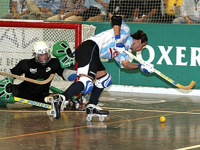

Hockey
| Home | About | Contactus | Indian Hockey Tournaments | International Hockey Tournaments | Subtypes |

Inline hockey is a variation of roller hockey very similar to ice hockey, from which it is derived. Inline hockey is played by two teams, consisting of four skaters and one goalie, on a dry rink divided into two halves by a center line, with one net at each end of the rink. The game is played in three 15-minute periods with a variation of the ice hockey off-side rule. Icings are also called, but are usually referred to as illegal clearing.[18] The governing body is the IIHF, as for ice hockey, but some leagues and competitions do not follow the IIHF regulations, in particular USA Inline and Canada Inline.
Ice hockey sticks are long L-shaped sticks made of wood, graphite, or composites with a blade at the bottom that can lie flat on the playing surface when the stick is held upright and can legally curve either way, for left- or right-handed players.